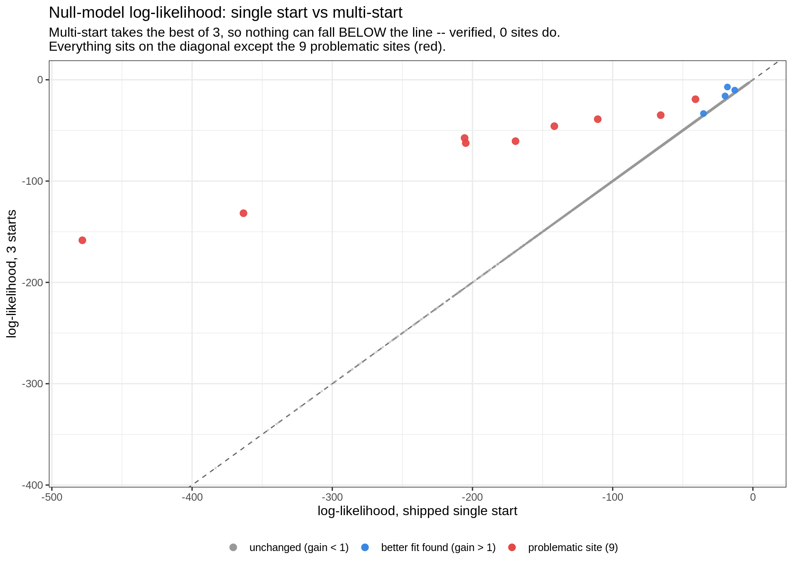
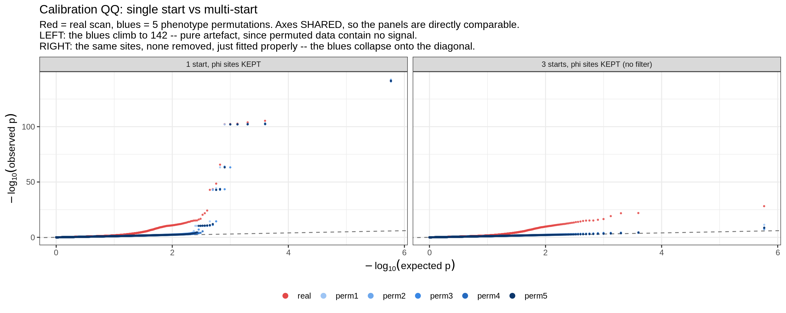
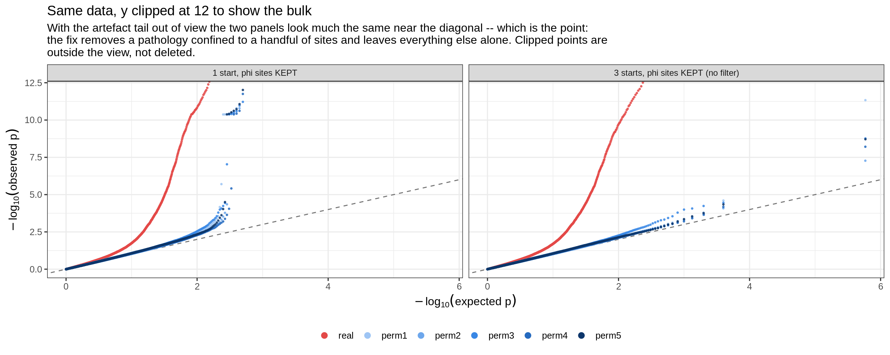
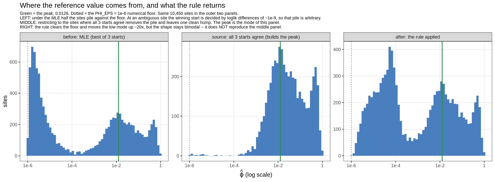
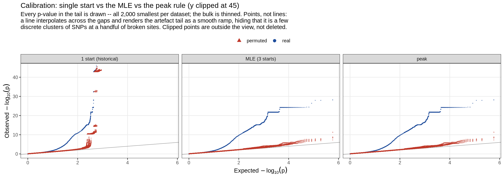

Last updated: 2026-09-03
Checks: 6 1
Knit directory: pumseq/
This reproducible R Markdown analysis was created with workflowr (version 1.7.0). The Checks tab describes the reproducibility checks that were applied when the results were created. The Past versions tab lists the development history.
The R Markdown file has unstaged changes. To know which version of
the R Markdown file created these results, you’ll want to first commit
it to the Git repo. If you’re still working on the analysis, you can
ignore this warning. When you’re finished, you can run
wflow_publish to commit the R Markdown file and build the
HTML.
Great job! The global environment was empty. Objects defined in the global environment can affect the analysis in your R Markdown file in unknown ways. For reproduciblity it’s best to always run the code in an empty environment.
The command set.seed(20260202) was run prior to running
the code in the R Markdown file. Setting a seed ensures that any results
that rely on randomness, e.g. subsampling or permutations, are
reproducible.
Great job! Recording the operating system, R version, and package versions is critical for reproducibility.
Nice! There were no cached chunks for this analysis, so you can be confident that you successfully produced the results during this run.
Great job! Using relative paths to the files within your workflowr project makes it easier to run your code on other machines.
Great! You are using Git for version control. Tracking code development and connecting the code version to the results is critical for reproducibility.
The results in this page were generated with repository version 9504a63. See the Past versions tab to see a history of the changes made to the R Markdown and HTML files.
Note that you need to be careful to ensure that all relevant files for
the analysis have been committed to Git prior to generating the results
(you can use wflow_publish or
wflow_git_commit). workflowr only checks the R Markdown
file, but you know if there are other scripts or data files that it
depends on. Below is the status of the Git repository when the results
were generated:
Ignored files:
Ignored: analysis/qtl_mapping_summary_cache/
Unstaged changes:
Modified: analysis/qtl_mapping_betabinomial_optimiser.Rmd
Note that any generated files, e.g. HTML, png, CSS, etc., are not included in this status report because it is ok for generated content to have uncommitted changes.
These are the previous versions of the repository in which changes were
made to the R Markdown
(analysis/qtl_mapping_betabinomial_optimiser.Rmd) and HTML
(docs/qtl_mapping_betabinomial_optimiser.html) files. If
you’ve configured a remote Git repository (see
?wflow_git_remote), click on the hyperlinks in the table
below to view the files as they were in that past version.
| File | Version | Author | Date | Message |
|---|---|---|---|---|
| Rmd | 9504a63 | XSun | 2026-09-01 | update |
| html | 9504a63 | XSun | 2026-09-01 | update |
suppressMessages({ library(data.table); library(ggplot2) })
knitr::opts_chunk$set(echo = TRUE, warning = FALSE, message = FALSE,
fig.align = "center", fig.width = 10)
PSI <- "/project/xinhe/xsun/pumseq/pumseq_processed/psi_qtl"
MA <- file.path(PSI, "qtl_betabinomial/multistart_audit")
DIAG <- file.path(PSI, "qtl_betabinomial/diagnostic_figures")
CAL <- file.path(PSI, "qtl_betabinomial/lrt_calibration")
ms <- fread(file.path(MA, "multistart_by_site.txt.gz"), sep = "\t")
agr <- fread(file.path(MA, "agreement_by_site.txt.gz"), sep = "\t")
idn <- fread(file.path(MA, "identifiability.txt.gz"), sep = "\t")
qqd <- fread(file.path(MA, "qq_thinned_multistart.tsv.gz"), sep = "\t")
bad9 <- fread(file.path(DIAG, "pathological_sites_w5kb_pc3_auto_noUCcalled.txt"),
sep = "\t")$sid
ms <- ms[is.finite(ll_1start) & is.finite(ll_3start)]
ms[, grp := "unchanged (gain < 1)"]
ms[gain > 1, grp := "better fit found (gain > 1)"]
ms[sid %chin% bad9, grp := "problematic site (9)"]
GRP <- c("unchanged (gain < 1)", "better fit found (gain > 1)", "problematic site (9)")
ms[, grp := factor(grp, levels = GRP)]
COL <- setNames(c("grey60", "#3987e5", "#e34948"), GRP)
setorder(ms, grp)
CRIT <- 1.92 # 1-df LRT at p = 0.05
# the multi-start calibration re-run may not have landed yet; the section that
# needs it is skipped rather than showing stale numbers.
MSCAL <- file.path(CAL, "calib_siteres_w5kb_pc3_auto_noUCcalled_MULTISTART_lambda.txt")
HAVE_MSCAL <- file.exists(MSCAL)The pU-QTL scan had a residual calibration problem: a handful of sites returned extreme p-values even under phenotype permutation, where no signal can exist. Those sites all had the fitted overdispersion φ pinned to its upper boundary, and the production pipeline excludes them on that basis — see the filtering strategy.
That φ value was not the maximum likelihood
estimate. fit_bb_mle starts its optimiser at a
single fixed point, φ₀ = 0.01. At these sites the likelihood is
bimodal in φ, and that start lands in the basin of a
secondary optimum on the boundary which is 20–320 log-likelihood units
worse than the optimum reachable from a higher start.
So the sites that broke calibration are sites where the fitter failed, not sites where the beta-binomial cannot describe the data. Their true φ is 0.5–0.9 — dispersed, but nowhere near degenerate.
Three explanations were checked and two were wrong.
knitr::kable(data.table(
hypothesis = c("The analytic gradient is wrong at extreme phi",
"The logit reparameterization creates a flat plateau at the boundary, so the optimiser stalls",
"The likelihood is genuinely bimodal in phi"),
test = c("compare neggr() against a numerical gradient at the returned solution",
"profile the likelihood in phi and inspect the gradient near phi = 1",
"restart the SAME optimiser from several phi values and compare optima"),
verdict = c("RULED OUT -- analytic and numeric agree to 4 significant figures",
"RULED OUT -- the gradient at the boundary is -27, pointing back toward the optimum, not 0",
"CONFIRMED -- two distinct stationary points, gradient norm ~1e-4 at each")),
caption = "The zero-gradient fallback in neggr() (`if (!all(is.finite(out))) return(rep(0, q+1))`) is a genuine latent hazard -- handing BFGS a zero vector is indistinguishable from 'you are at the optimum' -- but it never fires at these sites.")| hypothesis | test | verdict |
|---|---|---|
| The analytic gradient is wrong at extreme phi | compare neggr() against a numerical gradient at the returned solution | RULED OUT – analytic and numeric agree to 4 significant figures |
| The logit reparameterization creates a flat plateau at the boundary, so the optimiser stalls | profile the likelihood in phi and inspect the gradient near phi = 1 | RULED OUT – the gradient at the boundary is -27, pointing back toward the optimum, not 0 |
| The likelihood is genuinely bimodal in phi | restart the SAME optimiser from several phi values and compare optima | CONFIRMED – two distinct stationary points, gradient norm ~1e-4 at each |
Both solutions are real optima. At chr3:37277733:
knitr::kable(data.table(
`start phi0` = c(0.01, 0.10, 0.50),
`converged phi` = c(0.999999, 0.699145, 0.699146),
`log-likelihood` = c(-478.249, -158.412, -158.412),
note = c("<- the shipped single start", "", "")),
caption = "Same data, same objective, same optimiser, same starting coefficients. Only the starting phi differs. There is a valley between 0.01 and 0.1, and the historical start is on the wrong side of it.")| start phi0 | converged phi | log-likelihood | note |
|---|---|---|---|
| 0.01 | 0.999999 | -478.249 | <- the shipped single start |
| 0.10 | 0.699145 | -158.412 | |
| 0.50 | 0.699146 | -158.412 |
“Multi-start” means running the same optimiser from several starting φ values and keeping whichever run reaches the highest log-likelihood. That is not a heuristic tie-break: the MLE is the maximiser, so a run reporting a lower likelihood on the same data has simply failed. Adding starts can never give a worse fit.
It is switched on by an environment variable so that the default reproduces every pre-existing result exactly:
BB_PHI_STARTS <- local({ # betabin_lib.R
v <- as.numeric(strsplit(Sys.getenv("BB_PHI_STARTS", "0.01"), ",")[[1]])
...
})
# default "0.01" = the historical single start, bit-for-bit
# "0.01,0.1,0.5" = the fixCost is three cheap null fits instead of one. Verified in both modes:
the default returns −478.249 at chr3:37277733, the
multi-start returns −158.412, and well-behaved sites are unchanged.
Null refits at k = 3 on the autosome-only phenotype, every site, both schemes.
brk <- c(-Inf, 1e-6, 0.01, 1, 10, 100, Inf)
lab <- c("none (<1e-6)", "1e-6 to 0.01", "0.01 to 1", "1 to 10", "10 to 100", ">100")
ms[, band := cut(gain, brk, labels = lab, right = FALSE)]
knitr::kable(ms[, .(sites = .N, `% of sites` = sprintf("%.2f%%", 100 * .N / nrow(ms)),
`of which problematic` = sum(sid %chin% bad9)), by = band][order(band)],
caption = "Log-likelihood gained by using 3 starts instead of 1. For 99.5% of sites the two schemes agree to within 0.01 log units -- the single start is fine almost everywhere.")| band | sites | % of sites | of which problematic |
|---|---|---|---|
| none (<1e-6) | 6868 | 65.57% | 0 |
| 1e-6 to 0.01 | 3554 | 33.93% | 0 |
| 0.01 to 1 | 40 | 0.38% | 0 |
| 1 to 10 | 3 | 0.03% | 0 |
| 10 to 100 | 5 | 0.05% | 4 |
| >100 | 5 | 0.05% | 5 |
ggplot(ms, aes(ll_1start, ll_3start)) +
geom_abline(slope = 1, intercept = 0, linetype = "dashed", colour = "grey40") +
geom_point(aes(colour = grp, size = grp, alpha = grp)) +
scale_colour_manual(values = COL, name = NULL) +
scale_size_manual(values = c(0.35, 2.2, 2.6), guide = "none") +
scale_alpha_manual(values = c(0.35, 0.95, 0.95), guide = "none") +
guides(colour = guide_legend(override.aes = list(size = 2.6, alpha = 1))) +
labs(x = "log-likelihood, shipped single start", y = "log-likelihood, 3 starts",
title = "Null-model log-likelihood: single start vs multi-start",
subtitle = sprintf("Multi-start takes the best of 3, so nothing can fall BELOW the line -- verified, %d sites do.\nEverything sits on the diagonal except the 9 problematic sites (red).",
sum(ms$gain < -1e-6))) +
theme_bw(base_size = 12) + theme(legend.position = "bottom")
| Version | Author | Date |
|---|---|---|
| 9504a63 | XSun | 2026-09-01 |
All 9 problematic sites are among the 13 that gain more than one log unit. The correspondence between “single-start failure” and “broke calibration” is essentially exact.
knitr::kable(ms[gain > 1][order(-gain), .(
site = paste0("chr", sub(" ", ":", sid)), n_cl,
`phi 1 start` = sprintf("%.6f", phi_1start),
`phi 3 starts` = sprintf("%.4f", phi_3start),
`loglik gain` = round(gain, 1),
`failed toward` = ifelse(phi_1start > phi_3start, "phi -> 1", "phi -> 0"),
`was problematic` = sid %chin% bad9)],
caption = "The failure runs in BOTH directions: 10 sites were driven to the phi -> 1 boundary, 3 collapsed to the binomial limit instead. Any guard added to the fitter therefore has to be two-sided.")| site | n_cl | phi 1 start | phi 3 starts | loglik gain | failed toward | was problematic |
|---|---|---|---|---|---|---|
| chr3:37277733 | 50 | 0.999999 | 0.6991 | 319.8 | phi -> 1 | TRUE |
| chr6:29943223 | 44 | 0.999999 | 0.7570 | 231.6 | phi -> 1 | TRUE |
| chr2:89085177 | 36 | 0.999999 | 0.5095 | 148.1 | phi -> 1 | TRUE |
| chr14:106627394 | 35 | 0.999999 | 0.6768 | 142.3 | phi -> 1 | TRUE |
| chr17:36212383 | 48 | 0.999999 | 0.5110 | 108.7 | phi -> 1 | TRUE |
| chr14:106639258 | 42 | 0.999999 | 0.6179 | 95.8 | phi -> 1 | TRUE |
| chr2:90039467 | 41 | 0.999999 | 0.5696 | 71.8 | phi -> 1 | TRUE |
| chr17:53106304 | 50 | 0.999999 | 0.9218 | 30.8 | phi -> 1 | TRUE |
| chr6:32643315 | 40 | 0.999999 | 0.8555 | 21.8 | phi -> 1 | TRUE |
| chr2:88861305 | 45 | 0.999999 | 0.8347 | 11.0 | phi -> 1 | FALSE |
| chr2:89176553 | 31 | 0.000001 | 0.6918 | 3.9 | phi -> 0 | FALSE |
| chr14:106129991 | 36 | 0.001323 | 0.5558 | 2.7 | phi -> 0 | FALSE |
| chr22:22687094 | 35 | 0.001697 | 0.3949 | 1.9 | phi -> 0 | FALSE |
Of the sites where all three starts succeeded, how many distinct optima did they find? Agreement is judged on the log-likelihood, because that is what the optimiser maximises and what defines the MLE.
full <- agr[n_ok == 3L]
knitr::kable(data.table(
`distinct optima among the 3 starts` = c("all 3 agree", "exactly 2 agree", "all 3 differ"),
`by log-likelihood` = vapply(1:3, function(k) sum(full$n_opt_ll == k), integer(1)),
`by phi (within 5%)` = vapply(1:3, function(k) sum(full$n_opt_phi == k), integer(1)))[
, `:=`(`% loglik` = sprintf("%.2f%%", 100 * `by log-likelihood` / nrow(full)),
`% phi` = sprintf("%.2f%%", 100 * `by phi (within 5%)` / nrow(full)))],
caption = sprintf("Of the %s sites where all 3 starts converged. Note the two columns disagree completely -- see section 5.",
format(nrow(full), big.mark = ",")))| distinct optima among the 3 starts | by log-likelihood | by phi (within 5%) | % loglik | % phi |
|---|---|---|---|---|
| all 3 agree | 10396 | 5045 | 99.48% | 48.28% |
| exactly 2 agree | 54 | 692 | 0.52% | 6.62% |
| all 3 differ | 0 | 4713 | 0.00% | 45.10% |
The optimiser is reproducible on the likelihood at 99.48% of sites, and there is never a three-way split — when it fails it always falls into exactly two basins, which is what a bimodal surface predicts and a merely rough surface would not.
The φ column above tells a different story: at 45% of sites all three starts report a different φ while agreeing on the likelihood to within 0.01. That is not disagreement about anything real — it is that the data do not determine φ.
φ enters the model only through the variance inflation factor \(1 + (n_i-1)\varphi\). At a typical depth of ~16 reads, φ = 10⁻⁶ inflates the variance by 0.0015% and φ = 10⁻⁴ by 0.16%: indistinguishable with 50 observations.
knitr::kable(data.table(
phi = c("1e-06", "1e-05", "1e-04", "4.36e-04", "1e-03", "1e-02", "1e-01"),
`profile loglik` = c(-58.66200, -58.66201, -58.66216, -58.66323, -58.66681,
-58.94946, -65.67935),
`variance inflation` = c(1.000015, 1.000155, 1.001550, 1.006758, 1.015500,
1.155, 2.550)),
caption = "Profile log-likelihood in phi at chr13:20783614, an ordinary site (50 cell lines, median depth 16). Over four orders of magnitude in phi the log-likelihood moves by 0.005. A 1-df LRT needs 1.92 to distinguish two values, so every phi in [1e-6, 1e-2] -- a 10,000-fold range -- is statistically equivalent here.")| phi | profile loglik | variance inflation |
|---|---|---|
| 1e-06 | -58.66200 | 1.000015 |
| 1e-05 | -58.66201 | 1.000155 |
| 1e-04 | -58.66216 | 1.001550 |
| 4.36e-04 | -58.66323 | 1.006758 |
| 1e-03 | -58.66681 | 1.015500 |
| 1e-02 | -58.94946 | 1.155000 |
| 1e-01 | -65.67935 | 2.550000 |
Genome-wide, the data usually cannot even reject the binomial:
r <- idn[is.finite(drop_to_0) & is.finite(drop_to_1)]
knitr::kable(data.table(
question = c("Can the data reject phi = 0 (the binomial)?",
"Can the data reject phi = 1 (the boundary)?",
"Sites with fitted phi > 0.99 where the data DO reject phi = 0",
"Sites with fitted phi > 0.99 where they do NOT"),
answer = c(sprintf("NO at %s of %s sites (%.1f%%)",
format(sum(r$drop_to_0 < CRIT), big.mark = ","),
format(nrow(r), big.mark = ","), 100 * mean(r$drop_to_0 < CRIT)),
sprintf("NO at %d sites (%.2f%%)", sum(r$drop_to_1 < CRIT),
100 * mean(r$drop_to_1 < CRIT)),
sprintf("%d", sum(r[phi > 0.99]$drop_to_0 >= CRIT)),
sprintf("%d", sum(r[phi > 0.99]$drop_to_0 < CRIT)))),
caption = sprintf("Profile log-likelihood dropped to each boundary with beta re-optimised, compared against the 1-df threshold of %.2f. At four sites in five there is no defensible point estimate of phi at all.", CRIT))| question | answer |
|---|---|
| Can the data reject phi = 0 (the binomial)? | NO at 8,536 of 10,485 sites (81.4%) |
| Can the data reject phi = 1 (the boundary)? | NO at 18 sites (0.17%) |
| Sites with fitted phi > 0.99 where the data DO reject phi = 0 | 13 |
| Sites with fitted phi > 0.99 where they do NOT | 2 |
Consequence for the filter. φ̂ > 0.99
asks where the optimiser stopped. The question that matters is
do the data demand high dispersion? Those differ: a
likelihood-based criterion would drop the spurious flags and,
critically, would never have flagged the 9 problematic
sites, because at those the data reject φ ≈ 1 by 20–320 log
units. The existing filter caught them only because it thresholds the
very artefact that broke the fit.
Consequence for the published φ figures. The fine structure in the φ histograms on the strategy and covariate-count pages below about 10⁻² is not measuring dispersion. It shows where the optimiser stopped on a flat surface.
No. It disappears completely, and without discarding any sites.
CALTAB <- data.table(
run = c("1 start (as shipped)", "3 starts (fixed fitter)"),
real_lambda = c(1.401, 1.399),
perm = c("1.034 - 1.070", "1.029 - 1.063"),
real_tail = c(141.3, 28.2),
worst_perm_tail = c(142.6, 11.3),
problematic = c(9L, 0L))
knitr::kable(CALTAB[, .(run, `real lambda` = real_lambda,
`permutation lambda` = perm, `real tail` = real_tail,
`worst permuted tail` = worst_perm_tail, `problematic sites` = problematic)],
caption = "Both rows: k = 3, +/-5 kb, chr1-22, U/C sites removed, phi-boundary sites RETAINED in both. The ONLY difference is the number of optimiser starts.")| run | real lambda | permutation lambda | real tail | worst permuted tail | problematic sites |
|---|---|---|---|---|---|
| 1 start (as shipped) | 1.401 | 1.034 - 1.070 | 141.3 | 142.6 | 9 |
| 3 starts (fixed fitter) | 1.399 | 1.029 - 1.063 | 28.2 | 11.3 | 0 |
Fixing the optimiser removes the pathology outright, with no sites discarded.
The table above is easier to believe as a picture. Under permutation there is no genotype–phenotype relationship, so the blue series must lie on the diagonal; where they climb above it the test is manufacturing signal from nothing.
RUNLV <- c("1 start, phi sites KEPT", "3 starts, phi sites KEPT (no filter)")
ORD <- c("real", paste0("perm", 1:5))
CQ <- c(real = "#e34948", perm1 = "#9ec5f4", perm2 = "#6da7ec",
perm3 = "#3987e5", perm4 = "#256abf", perm5 = "#0d366b")
q <- copy(qqd)[run %in% RUNLV] # the phi-filter run is not shown
q[, run := factor(run, levels = RUNLV)][, dataset := factor(dataset, levels = ORD)]
ggplot(q, aes(expected, observed, colour = dataset)) +
geom_abline(slope = 1, intercept = 0, linetype = "dashed", colour = "grey45") +
geom_point(size = 0.55, alpha = 0.8) +
scale_colour_manual(values = CQ, name = NULL) +
guides(colour = guide_legend(override.aes = list(size = 2.6, alpha = 1), nrow = 1)) +
facet_wrap(~ run, nrow = 1) +
labs(x = expression(-log[10]("expected p")), y = expression(-log[10]("observed p")),
title = "Calibration QQ: single start vs multi-start",
subtitle = paste("Red = real scan, blues = 5 phenotype permutations. Axes SHARED, so the panels are directly comparable.",
"\nLEFT: the blues climb to 142 -- pure artefact, since permuted data contain no signal.",
"\nRIGHT: the same sites, none removed, just fitted properly -- the blues collapse onto the diagonal.")) +
theme_bw(base_size = 12) + theme(legend.position = "bottom",
strip.text = element_text(size = 9))
| Version | Author | Date |
|---|---|---|
| 9504a63 | XSun | 2026-09-01 |
# clipped companion: the left panel's artefact tail compresses everything else,
# so the bulk behaviour near the diagonal is invisible without clipping.
YM <- 12
ggplot(q, aes(expected, observed, colour = dataset)) +
geom_abline(slope = 1, intercept = 0, linetype = "dashed", colour = "grey45") +
geom_point(size = 0.55, alpha = 0.8) +
scale_colour_manual(values = CQ, name = NULL) +
guides(colour = guide_legend(override.aes = list(size = 2.6, alpha = 1), nrow = 1)) +
facet_wrap(~ run, nrow = 1) +
coord_cartesian(ylim = c(0, YM)) +
labs(x = expression(-log[10]("expected p")), y = expression(-log[10]("observed p")),
title = sprintf("Same data, y clipped at %d to show the bulk", YM),
subtitle = paste("With the artefact tail out of view the two panels look much the same near the diagonal --",
"which is the point:\nthe fix removes a pathology confined to a handful of sites and leaves",
"everything else alone. Clipped points are\noutside the view, not deleted.")) +
theme_bw(base_size = 12) + theme(legend.position = "bottom",
strip.text = element_text(size = 9))
| Version | Author | Date |
|---|---|---|
| 9504a63 | XSun | 2026-09-01 |
λ barely moves (1.401 → 1.399, permutation 1.034–1.070 → 1.029–1.063), and that is expected rather than disappointing: λ is a median over ~292,000 site-SNP p-values, and 9 sites contribute a few hundred of them. A median cannot move. This is the same reason λ was identified early in this project as the wrong diagnostic for a pathology confined to a few sites — tail height and the problematic-site count are the sensitive statistics, and both collapse.
Section 5 leaves an open problem. Taking the highest-likelihood solution is the right rule whenever the likelihood actually distinguishes the candidates — but at about half of all sites it does not, and there the winning start is decided by log-likelihood differences of order 10⁻⁹. That is arbitrary. In statistical terms φ is unidentifiable at those sites: different values give the same likelihood, so the data contain no information to choose between them.
When a parameter is unidentifiable, one workable remedy is to choose the value that looks reasonable in light of the other sites. Most sites do return a single well-determined φ; the distribution of those φ has a peak, which is the most likely value of φ across the dataset; and where a site is ambiguous, the candidate nearest that peak can be taken instead of an arbitrary one.
The rule. Run the optimiser from φ₀ ∈ {0.01, 0.1, 0.5} as before. Of the solutions that converge, return the one whose φ is closest to the peak on the log₁₀ scale.
Note what this does and does not touch. It changes which of several optima is reported, never how they are found — so the multi-start fix of sections 2–3 stands unchanged underneath it, and the 13 broken fits are recovered by the multi-start whichever selection rule is layered on top.
The peak has to be measured on sites where φ is determined, otherwise it measures the optimiser rather than the dispersion.
PS <- file.path(PSI, "qtl_betabinomial/phisel_compare")
knitr::kable(fread(file.path(PS, "peak_construction.tsv"), sep = "\t"),
caption = "Sites where all three starts agree on phi are the ones where phi is identified. Over ALL sites the mode is instead 2.4e-6, but 99.5% of the sites below 1e-4 are ones where the starts DISAGREE -- that mode is the PHI_EPS = 1e-6 floor showing through, not a fact about dispersion.")| quantity | value |
|---|---|
| sites in the phenotype | 10,738 |
| attempted by the audit | 10,725 |
| all 3 starts converged | 10,450 |
| all 3 agree on phi within 5% (used for the peak) | 5,045 |
| peak of log10(phi) on those sites | 0.0126 |
| median phi on those sites | 0.0252 |
knitr::kable(fread(file.path(PS, "peak_stability.tsv"), sep = "\t"),
caption = "The peak is solid to about one significant figure -- call it phi = 0.013 -- and the second figure is not meaningful. That is enough here, because the competing candidates at an ambiguous site are typically orders of magnitude apart, so a 10% wobble in the reference cannot flip a decision.")| method | peak |
|---|---|
| KDE, bandwidth adjust = 0.5 | 0.01288 |
| KDE, bandwidth adjust = 0.75 | 0.01278 |
| KDE, bandwidth adjust = 1 | 0.01260 |
| KDE, bandwidth adjust = 1.5 | 0.01206 |
| KDE, bandwidth adjust = 2 | 0.01296 |
| histogram, 20 bins | 0.01778 |
| histogram, 30 bins | 0.01259 |
| histogram, 40 bins | 0.01259 |
| histogram, 60 bins | 0.01413 |
The left and middle panels are the reason the peak has to be measured on the agreeing subset. The right panel is what the rule actually returns.
PHID <- fread(file.path(PS, "phi_distributions.tsv.gz"), sep = "\t")
VLV <- c("before: MLE (best of 3 starts)",
"source: all 3 starts agree (builds the peak)",
"after: the rule applied")
PHID[, view := factor(view, levels = VLV)]
PEAK <- 0.0126; EPS <- 1e-6
ggplot(PHID, aes(phi)) +
geom_histogram(bins = 60, fill = "#4a7fbf", colour = NA) +
geom_vline(xintercept = PEAK, colour = "#2c8a4a", linewidth = 0.7) +
geom_vline(xintercept = EPS, colour = "grey35", linetype = "dotted", linewidth = 0.5) +
facet_wrap(~ view, nrow = 1, scales = "free_y") +
scale_x_log10(breaks = 10^seq(-6, 0, 2), labels = c("1e-6", "1e-4", "1e-2", "1")) +
labs(x = expression(hat(varphi)~"(log scale)"), y = "sites",
title = "Where the reference value comes from, and what the rule returns",
subtitle = paste(
"Green = the peak, 0.0126. Dotted = the PHI_EPS = 1e-6 numerical floor. Same 10,450 sites in the outer two panels.",
"LEFT: under the MLE half the sites pile against the floor. At an ambiguous site the winning start is decided by loglik differences of ~1e-9, so that pile is arbitrary.",
"MIDDLE: restricting to the sites where all 3 starts agree removes the pile and leaves one clean hump. The peak is the mode of this panel.",
"RIGHT: the rule clears the floor and moves the low mode up ~20x, but the shape stays bimodal -- it does NOT reproduce the middle panel.", sep = "\n")) +
theme_bw(base_size = 11) +
theme(panel.grid.minor = element_blank(), strip.text = element_text(size = 9),
plot.subtitle = element_text(size = 8))
knitr::kable(fread(file.path(PS, "phi_distribution_summary.tsv"), sep = "\t"),
caption = "The pile at the numerical floor is what the rule removes: 16.3% of sites to 0.9%. But 41.8% still sit below 1e-4 afterwards, against 0.5% in the agreeing subset.")| view | sites | below 1e-4 | at the 1e-6 floor | median | mode of log10(phi) |
|---|---|---|---|---|---|
| before: MLE (best of 3 starts) | 10450 | 5,130 (49.1%) | 1,707 (16.3%) | 0.000290 | 2.40e-06 |
| source: all 3 starts agree (builds the peak) | 5045 | 25 (0.5%) | 10 (0.2%) | 0.025200 | 1.26e-02 |
| after: the rule applied | 10450 | 4,367 (41.8%) | 89 (0.9%) | 0.000575 | 5.15e-05 |
The rule does not reshape the φ distribution into the middle
panel, and it was never going to. It chooses among the three
optima the starts actually found, so where all three are low it returns
a low value — the nearest available candidate, not the peak itself. What
it does achieve is removing the arbitrary pile at the
PHI_EPS = 1e-6 floor, from 16.3% of sites to 0.9%, and
lifting the low mode from 2.4×10⁻⁶ to 5.2×10⁻⁵.
That is worth being clear about, because it bounds what the rule can be claimed to do: it replaces an arbitrary choice with a defensible one at the sites where a choice exists, and it does not manufacture dispersion where the candidate set offers none. Section 5 still applies — at four sites in five there is no defensible point estimate of φ, and no selection rule can create one.
knitr::kable(fread(file.path(PS, "rule_divergence.tsv"), sep = "\t"),
caption = "The rule changes phi at about half of all sites -- that is expected, since that is how often phi is ambiguous -- but it OVERRULES the likelihood at only 63, and gives up more than one log unit at only 3.")| statistic | value |
|---|---|
| sites where all 3 starts converged | 10,450 |
| phi differs from the MLE’s phi by > 5% (relative) | 5,410 (51.8%) |
| phi differs by more than 10-fold | 2,045 (19.6%) |
| the rule OVERRIDES the likelihood (loglik gap > 0.01) | 63 (0.60%) |
| …giving up more than 1 log unit | 3 |
| worst log-likelihood given up anywhere | 4.4 |
At the 13 sites from section 3, the rule recovers the maximum-likelihood answer at 11, including every site where the optimiser had run off to φ = 1:
knitr::kable(fread(file.path(PS, "sites13_by_rule.tsv"), sep = "\t"),
caption = "The two misses are the last two rows, where the candidate nearer the peak is the worse-fitting one and choosing it gives up 1.9-2.7 log units. Note that phi ~ 0.0013 IS closer to the genome-wide peak than phi ~ 0.556 -- by the heuristic's own logic it is the more reasonable value, and it is only wrong by the likelihood's standard.")| site | candidate_phis | phi_mle | phi_peak | loglik_cost_of_peak | same_optimum |
|---|---|---|---|---|---|
| chr14:106129991 | 0.00132 | 0.556 | 0.556 | 0.00132 | 2.70 | FALSE |
| chr22:22687094 | 0.0017 | 0.395 | 0.395 | 0.00170 | 1.92 | FALSE |
| chr17:53106304 | 0.922 | 1 | 0.922 | 0.92200 | 0.00 | TRUE |
| chr6:32643315 | 0.856 | 1 | 0.855 | 0.85500 | 0.00 | TRUE |
| chr2:88861305 | 0.835 | 1 | 0.835 | 0.83500 | 0.00 | TRUE |
| chr6:29943223 | 0.757 | 0.757 | 1 | 0.757 | 0.75700 | 0.00 | TRUE |
| chr3:37277733 | 0.699 | 1 | 0.699 | 0.69900 | 0.00 | TRUE |
| chr2:89176553 | 1.03e-06 | 0.692 | 0.692 | 0.69200 | 0.00 | TRUE |
| chr14:106627394 | 0.677 | 1 | 0.677 | 0.67700 | 0.00 | TRUE |
| chr14:106639258 | 0.618 | 1 | 0.618 | 0.61800 | 0.00 | TRUE |
| chr2:90039467 | 0.57 | 1 | 0.570 | 0.57000 | 0.00 | TRUE |
| chr17:36212383 | 0.511 | 1 | 0.511 | 0.51100 | 0.00 | TRUE |
| chr2:89085177 | 0.509 | 0.51 | 1 | 0.509 | 0.50900 | 0.00 | TRUE |
This is the criterion that matters, and it is the one the 13-site scorecard cannot answer: the rule re-picks φ across roughly half the genome, so only a full real-plus-permutation run shows what that does.
RL <- c("1 start (historical)", "MLE (3 starts)", "peak")
knitr::kable(fread(file.path(PS, "phisel_headline.tsv"), sep = "\t")[run %chin% RL][match(RL, run)],
caption = "All three runs: k = 3, +/-5 kb, chr1-22, U/C sites removed, phi-boundary sites RETAINED, same 5 permutation seeds. The ONLY difference is how phi is chosen.")| run | real lambda | perm lambda min | perm lambda max | real tail | worst perm tail | problematic sites |
|---|---|---|---|---|---|---|
| 1 start (historical) | 1.401 | 1.034 | 1.070 | 141.3 | 142.6 | 9 |
| MLE (3 starts) | 1.399 | 1.029 | 1.063 | 28.2 | 11.3 | 0 |
| peak | 1.401 | 1.031 | 1.064 | 28.2 | 11.3 | 0 |
The rule calibrates exactly as well as the MLE. Zero problematic sites, real tail 28.2 and worst permuted tail 11.3 in both cases — identical to the decimal, and each leaves a single permutation candidate that fails the real-data half of the criterion. The 63 sites where the rule overrules the likelihood are nowhere near the tail, so the log-likelihood given up there never converts into a false positive.
qs <- fread(file.path(PS, "qq_thinned_phisel.tsv.gz"), sep = "\t")[run %chin% RL]
qs[, run := factor(run, levels = RL)]
qs[, kind := ifelse(dataset == "real", "real", "permuted")]
ggplot(qs, aes(expected, observed, group = dataset, colour = kind, shape = kind)) +
geom_abline(slope = 1, intercept = 0, colour = "grey55", linewidth = 0.3) +
geom_point(size = 0.5, alpha = 0.55) +
facet_wrap(~ run, nrow = 1) +
scale_colour_manual(values = c(real = "#1f4e9c", permuted = "#c0392b"), name = NULL) +
scale_shape_manual(values = c(real = 16, permuted = 17), name = NULL) +
coord_cartesian(ylim = c(0, 45)) +
guides(colour = guide_legend(override.aes = list(size = 2.5, alpha = 1))) +
labs(x = expression(Expected~-log[10](p)), y = expression(Observed~-log[10](p)),
title = "Calibration: single start vs the MLE vs the peak rule (y clipped at 45)",
subtitle = paste("Every p-value in the tail is drawn -- all 2,000 smallest per dataset; the bulk is thinned. Points, not lines:",
"a line interpolates across the gaps and renders the artefact tail as a smooth ramp, hiding that it is a few",
"discrete clusters of SNPs at a handful of broken sites. Clipped points are outside the view, not deleted.", sep = "\n")) +
theme_bw(base_size = 11) +
theme(legend.position = "top", panel.grid.minor = element_blank(),
strip.text = element_text(size = 9))
The counts behind those tails:
knitr::kable(dcast(fread(file.path(PS, "tail_counts.tsv"), sep = "\t")[run %chin% RL],
run ~ kind, value.var = "N")[match(RL, run)],
caption = "Number of p-values reaching 1e-10. Under the historical fitter over five thousand PERMUTED p-values clear it; under the corrected fitter exactly one does. The real counts barely change (2,026 -> 2,010), so the fix removes false positives rather than suppressing signal generally.")| run | permuted | real |
|---|---|---|
| 1 start (historical) | 5065 | 2026 |
| MLE (3 starts) | 1 | 2010 |
| peak | 1 | 2010 |
Like the multi-start, the rule is switched on by an environment variable so the default reproduces every pre-existing result exactly:
BB_PHI_SELECT <- Sys.getenv("BB_PHI_SELECT", "loglik") # betabin_lib.R
BB_PHI_PEAK <- 0.0126
# "loglik" the MLE -- the historical behaviour, bit-for-bit
# "peak" nearest 0.0126 among the converged startsThe peak rule is adopted for production. Three points are worth keeping in view:
sessionInfo()R version 4.2.0 (2022-04-22)
Platform: x86_64-pc-linux-gnu (64-bit)
Running under: CentOS Linux 8
Matrix products: default
BLAS/LAPACK: /software/openblas-0.3.13-el8-x86_64/lib/libopenblas_skylakexp-r0.3.13.so
locale:
[1] C
attached base packages:
[1] stats graphics grDevices utils datasets methods base
other attached packages:
[1] ggplot2_3.4.2 data.table_1.14.4 workflowr_1.7.0
loaded via a namespace (and not attached):
[1] tidyselect_1.2.0 xfun_0.38 bslib_0.3.1 colorspace_2.0-3
[5] vctrs_0.6.1 generics_0.1.3 htmltools_0.5.7 yaml_2.3.5
[9] utf8_1.2.2 rlang_1.1.2 R.oo_1.24.0 jquerylib_0.1.4
[13] later_1.3.0 pillar_1.9.0 glue_1.6.2 withr_2.5.0
[17] R.utils_2.11.0 lifecycle_1.0.4 stringr_1.5.0 munsell_0.5.0
[21] gtable_0.3.0 R.methodsS3_1.8.1 evaluate_0.15 labeling_0.4.2
[25] knitr_1.42 callr_3.7.0 fastmap_1.1.0 httpuv_1.6.5
[29] ps_1.7.0 fansi_1.0.3 highr_0.9 Rcpp_1.0.11
[33] promises_1.2.0.1 scales_1.2.0 jsonlite_1.8.7 farver_2.1.0
[37] fs_1.5.2 digest_0.6.29 stringi_1.7.6 processx_3.5.3
[41] dplyr_1.1.2 getPass_0.2-2 rprojroot_2.0.3 grid_4.2.0
[45] cli_3.6.2 tools_4.2.0 magrittr_2.0.3 sass_0.4.1
[49] tibble_3.2.1 whisker_0.4 pkgconfig_2.0.3 rmarkdown_2.21
[53] httr_1.4.5 rstudioapi_0.14 R6_2.5.1 git2r_0.30.1
[57] compiler_4.2.0